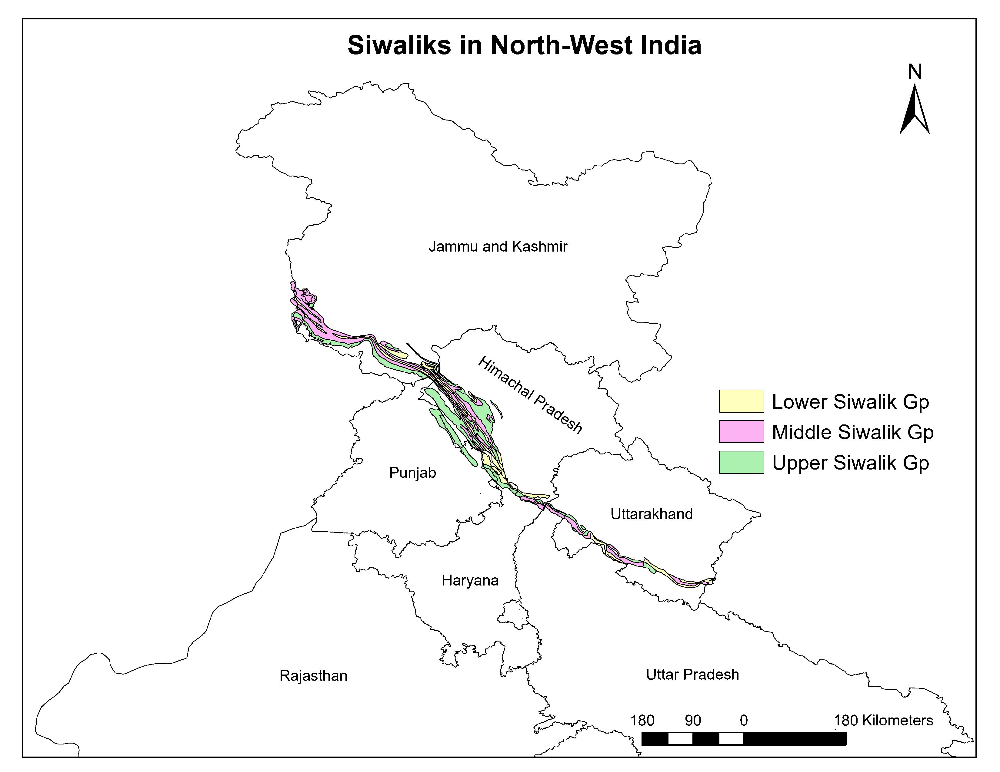
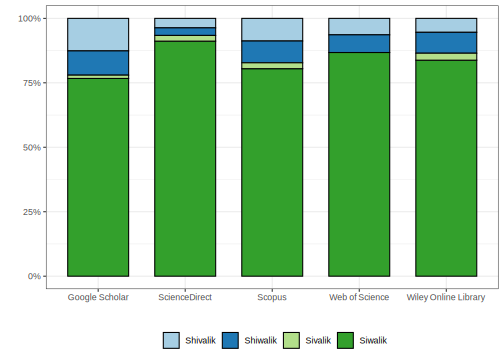
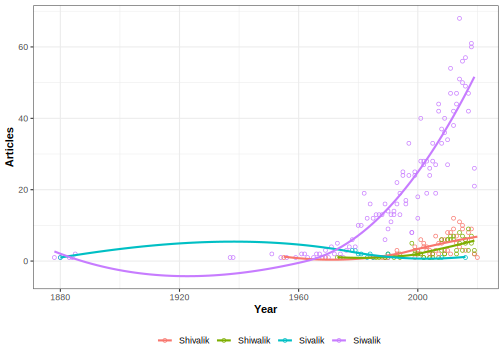
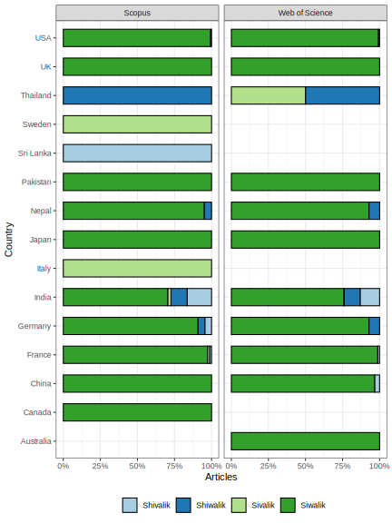
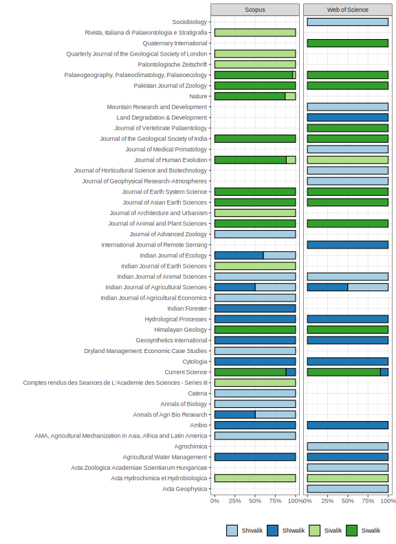

![]()

Shivalik, Siwalik, Shiwalik or Sivalik: Which one is an appropriate term for the foothills of Himalayas?
Siwalik
Journal Article
Journal of Scientific Research
The present study has applied bibliometric analysis to resolve the inconsistency about the usage of these terms. Here, we have shown that the term ‘Siwalik’ was most dominant in the available literature.
Abstract
Various spelling variants such as Siwalik, Shivalik, Shiwalik and Sivalik, have been introduced in the literature while referring to foothills of the Himalayas. These spelling variants are creating hindrances to acquiring a complete knowledge about the region. Therefore, the present study has applied bibliometric analysis to resolve the inconsistency about the usage of these terms. Here, we have shown that the term ‘Siwalik’ was most dominant in the available literature. Our analysed results strongly favoured the use of the term ‘Siwalik’ as it is the oldest and most frequently used term in both the major databases Scopus and Web of Science. India is the country that contributes the most to these variations in the spelling and also the articles published in Indian Journals have these variations. Therefore, we strongly recommend the use of the term ‘Siwalik’ while referring to the region. Thus, the present article can serve as a guide to adopt a suitable term for the authors and publishers.
Introduction
The Himalayas is the younger most mountain system of the world which can be divided into the greater Himalayas, the lesser Himalayas and the outer Himalayas depending on the average elevations (Burrard and Hayden 1907; Wadia 1944). The outer Himalayas or the southernmost foothills of the Himalayas, ranging from elevations of 600-1200 m are also referred as the ‘Siwaliks’ (Bose 1972; Burrard and Hayden 1907; Wadia 1944). These hills are distributed parallel to the Himalayan hills from the Brahmaputra valley to the Potwar Plateau of Pakistan (Krishnan 1943) and cover the Indian states of Jammu and Kashmir, Punjab, Himachal Pradesh, Haryana, Uttarakhand, Uttar Pradesh and Assam (Yadav et al. 2015). The distribution of Siwaliks in North-western region of India is depicted in Figure 1.
However, available evidence indicate that the Siwaliks were formed during the upper Miocene to Pliocene epoch and are chiefly consist of clay, sandstones and conglomerates (Vredenburg 1910; Bose 1972). This region is well-known for its rich vertebrate faunal deposits, indicating that a rich diversity of plants would have supported these animals (Wadia 1944). The silicified wood or the whole tree trunks can be found in sandstones, whereas leaf impressions in shales of the same region were also reported, which supports the abundance of vegetation (Vredenburg 1910; Wadia 1944). However, the literature indicates large inconsistencies in the spelling use while describing these foothills and as many as four spelling variants viz. Siwalik (Cautley 1839; Shukla and Bora 2019), Shiwalik (Batra and Batra 1963; Kaur et al. 2019), Shivalik (Campbell 1879; Kumar and Sankhyan 2019) and Sivalik (Asiatic Society of Bengal 1836; Ghosh 2016) are used. These inconsistencies are not prevalent only in scientific literature, but also exist in the non-scientific literature such as various governmental reports of India (like the annual reports of the ministry of environment forest and climate change, MoEFCC; The Project Tiger, Forest Survey of India, Zoological Survey of India, etc.), Gazettes of India (The Gazette of India and its States, Encyclopaedias (Editors of the Columbia Encyclopedia 2019; Editors of the Encyclopaedia Brittanica 2011) and dictionaries (Lexico Dictionaries 2019). Therefore, it is imperative to resolve these conflicts of the spelling usages, so as to maintain uniformity and avoid any confusions in the future. Here, we have addressed this issue by providing evidence through vote counting approach (i.e. the total number of publications for each spelling variant) and years of publications so as to track their origin and abundance in the literature.
Data and Methods
We have explored the literature using all the variant terms as keywords (Shivalik*, Shiwalik*, Sivalik* and Siwalik*) from available databases: Google Scholar, Web of Science [v5.30] (WoS) and Scopus. Since we had access to Scopus (1878-2019) and Web of Science (1989-2019) databases, a bibliometric analysis of both the databases was performed using the package bibliometrix (Aria and Cuccurullo 2017) in R programming language (R Core Team 2021). The data were acquired from both the databases on 16 July 2019. Specifically, the distribution of these terms has been analysed across different databases, year (yearly production of publications and documents), countries (country of the corresponding author from publications) and sources like journals, books, proceedings, etc.
Results and Discussion
The results of the vote count approach from different databases have indicated the dominance of the term Siwalik and the distribution pattern of these terms is shown in Figure 2.

Each selected database depicted the same pattern i.e. the term ‘Siwalik’ was most dominant whereas the term ‘Sivalik’ was least represented. On the other hand, the terms ‘Shivalik’ and ‘Shiwalik’ were more or less equally represented. Further, the annual production of published articles in the Scopus and Web of Science database has revealed that the number of publications with term ‘Siwalik’ has exponentially increased, whereas it is only during the past two decades when the usage of the terms ‘Shivalik’ and ‘Shiwalik’ has become more frequent (Figure 3).

Furthermore, the analysis of Scopus and Web of Science database revealed that the term ‘Siwalik’ was the oldest term (1878) which has increased rapidly and continues to increase, but the term ‘Shivalik’ (1955) and ‘Shiwalik’ (1973) were relatively recent terms which are increasing only during the recent decades. Another term ‘Sivalik’ is also one of the oldest terms (1880) but the usage of this term has been diminished during the past decades (Figure 3). However, a more extensive survey of available literature from other sources (Internet Archive and Biodiversity Heritage Library) suggested that the term ‘Sivalik’ was the oldest term and first appeared in 1836 (Asiatic Society of Bengal 1836). Though the usage of the term ‘Siwalik’ can be traced from 1528 A. D. in memoirs of the Emperor Babar (Burrard and Hayden 1907), the term was first introduced to scientific literature in 1839 by Capt. P. T. Cautley (a palaeontologist) and Hugh Falconer (a geologist and botanist) of the East India Company, who surveyed the hills located near to the Haridwar a pilgrimage site dedicated to Lord Shiva, therefore, the hills were termed as -― Siwalik hills (Cautley 1839; Sorkhabi 2010). Similarly, the term ‘Shivalik’ seems to be first introduced by J. P. Campbell in 1879 while describing his observations on the Glacial period from India (Campbell 1879) and this term seems to be second most frequently used term in modern literature. Further, the term ‘Shiwalik’ was first observed in 1963 while describing the Discomycetes fungi from the region (Batra and Batra 1963). Thus, the term ‘Sivalik’ was the oldest followed by ‘Siwalik’ and ‘Shivalik’ whereas the term ‘Shiwalik’ is the most recently used term. The dominance of the term ‘Siwalik’ may be due to its popularity, widespread use and is one of the oldest terms. All these terms are inspired by Lord Shiva, but it is the perception of author and subsequent translation into English which may have caused the observed variations in the spellings. Most of the early researchers who explored the area were non-native foreigners (from Britain, USA, etc.) and they named this hilly region according to their perception. That’s why the terms ‘Siwalik’ and ‘Sivalik’ were prevalent during the past century. However, the Indian authors have explored the region only during the past 4-5 decades, and they have introduced the terms ‘Shiwalik’ and ‘Shivalik’ referring to its correct translation.
The origin of these terms across countries was evaluated by analysing the ten most frequent countries with the corresponding author in their publications with different terms. The distribution of these terms across countries is represented in Figure 4.

The variation of spellings of these terms is most commonly originates from India and therefore the publications from the country India are most diverse in the use of these terms. However, some countries like China, France, Germany, Nepal and Thailand have also used different spelling variants whereas other countries have used either of the spelling consistently. Since a large part of these foothills is shared by India; therefore, the country has the greatest number of publications mentioning these terms. The distribution of these terms across the top ten most relevant sources (like Journals, Books, etc.) is represented in Figure 5 and these spelling variants were prevalent within some journals like Annals of Agri Bio Research, Current Science, Indian Journal of Agricultural Sciences, Indian Journal of Ecology, Journal of Human Evolution, Nature and Palaeogeography, Palaeoclimatology, Palaeoecology. But this variation is less prominent in the Web of Science as compared to Scopus (Figure 5).

It has been further observed that the term ‘Siwalik’ was most consistently used in the fields of Geosciences and related fields which is still in practice. On the other hand, almost all the terms were used interchangeably in agricultural and biological sciences or other fields. General information about bibliometric indicators of the publications with the terms from the Scopus and Web of Science database is presented in Table 1.
| Bibliometric Indicator | Web of Science | Scopus | ||||||
|---|---|---|---|---|---|---|---|---|
| Siwalik | Shivalik | Shiwalik | Sivalik | Siwalik | Shivalik | Shiwalik | Sivalik | |
| Total Number of Documents | 890.00 | 72.00 | 59.000 | 2.00 | 1167.00 | 141.00 | 99.00 | 18.000 |
| Average Citations per Document | 23.35 | 10.94 | 7.729 | 5.50 | 22.69 | 7.69 | 5.32 | 13.560 |
| Total Number of Authors | 1552.00 | 180.00 | 142.000 | 9.00 | 1797.00 | 304.00 | 217.00 | 17.000 |
| Documents per Author | 0.57 | 0.40 | 0.410 | 0.22 | 0.65 | 0.46 | 0.45 | 1.060 |
| Authors per Document | 1.74 | 2.50 | 2.410 | 4.50 | 1.54 | 2.16 | 2.19 | 0.940 |
| Co-Authors per Document | 3.75 | 3.65 | 3.320 | 4.50 | 3.26 | 3.17 | 3.38 | 2.060 |
| Collaboration Index | 1.91 | 2.59 | 2.540 | 4.50 | 1.77 | 2.39 | 2.28 | 0.923 |
Conclusion
Based on our results, we strongly advocate the usage of the term ‘Siwalik’. However, the term ‘Shivalik’ can also be considered as a correct translation based on the pilgrimage site dedicated to Lord Shiva. Therefore, keeping subject-specific usage of terms in the view, we suggest that the authors from the geosciences should consistently use the term ‘Siwalik’ (as most of them are following the same) whereas other fields including agricultural and biological sciences should use the term ‘Shivalik’ instead of ‘Shiwalik’ or ‘Sivalik’. Hence, the authors from India and neighbouring countries, who are most actively engaged in scientific research in this region and frequently use these terms should take care to adopt any one of the above terms consistently. Similarly, the editors and publishers from the related fields are also requested to look for the consistency of the usage of a specific term in their respective Journals or publications.
Acknowledgement
Authors are grateful to the Chairperson, Department of Botany, Panjab University, Chandigarh, for providing all the necessary facilities required for the work. Both of us (Abhishek Kumar and Meenu Patil) are also thankful to the University Grants Commission, Government of India, New Delhi for financial support in the form of Junior Research Fellowships.
References
Aria, Massimo, and Corrado Cuccurullo. 2017. “Bibliometrix: An r-Tool for Comprehensive Science Mapping Analysis.” Journal of Informetrics 11 (4): 959–75. https://doi.org/10.1016/j.joi.2017.08.007.
Asiatic Society of Bengal. 1836. Asiatic Researches, or, Transactions of the Society Instituted in Bengal for Inquiring into the History and Antiquities, the Arts, Sciences and Literature of Asia. Vol. 19. Calcutta: Bengal Military Orphan Press. https://www.biodiversitylibrary.org/item/137987.
Batra, L. R., and S. W. T. Batra. 1963. “Indian Discomycetes.” University of Kansas Science Bulletin 44 (6): 109–256. https://www.biodiversitylibrary.org/item/22703.
Bose, S. C. 1972. Geography of the Himalaya. New Delhi: National Book Trust. https://archive.org/details/GeographyOfTheHimalaya/page/n5.
Burrard, S. G., and H. H. Hayden. 1907. A Sketch of the Geography and Geology of the Himalaya Mountains and Tibet. 1st ed. Calcutta: Superintendent Government Printing, India. https://archive.org/details/sketchofgeograph00burr/page/66.
Campbell, J. F. 1879. “Glacial Periods.” Quarterly Journal of the Geological Society of London 35: 98–137. https://www.biodiversitylibrary.org/item/120478.
Cautley, P. T. 1839. “XIX.Note on a Fossil Ruminant Genus Allied to Giraffidæ in the Siwalik Hills.” Annals and Magazine of Natural History 3 (16): 167–69. https://doi.org/10.1080/03745483909443216.
Editors of the Columbia Encyclopedia. 2019. “Shiwalik Hills.” New York: The Columbia University Press. https://www.encyclopedia.com/reference/encyclopedias-almanacs-transcripts-and-maps/shiwalik-hills.
Editors of the Encyclopaedia Brittanica. 2011. “Siwalik Range.” Chicago: Encyclopædia Britannica, Inc. https://www.britannica.com/place/Siwalik-Range.
Ghosh, Nabaparna. 2016. “Modern Designs: History and Memory in Le Corbusier’s Chandigarh.” Journal of Architecture and Urbanism 40 (3): 220–28. https://doi.org/10.3846/20297955.2016.1210048.
Kaur, Manpreet, Ajay Kumar, Rohit Mehra, and Rosaline Mishra. 2019. “Age-Dependent Ingestion and Inhalation Doses Due to Intake of Uranium and Radon in Water Samples of Shiwalik Himalayas of Jammu and Kashmir, India.” Environmental Monitoring and Assessment 191 (4). https://doi.org/10.1007/s10661-019-7361-z.
Krishnan, M. S. 1943. Geology of India and Burma. 1st ed. Madras: Higginbothams (Private) Ltd. https://archive.org/details/in.ernet.dli.2015.513854/page/n1.
Kumar, Vipin, and Varun Sankhyan. 2019. “Musculoskeletal Injuries: Prevalence and Severity in Free-Range Rhesus Macaques (Macaca Mulatta) of Himalayan Shivalik Hills, Northern India.” Biological Rhythm Research, May, 1–11. https://doi.org/10.1080/09291016.2019.1613795.
Lexico Dictionaries. 2019. “Siwalik Hills.” https://www.lexico.com/en/definition/siwalik_hills.
R Core Team. 2021. R: A Language and Environment for Statistical Computing. Vienna, Austria: R Foundation for Statistical Computing. https://www.R-project.org/.
Shukla, U.K., and D.S. Bora. 2019. “The Lower Siwalik Foreland Basin Sedimentation in the Kumaun Himalaya (India): A Transition from Megafan Setting to Incised Valley Fills.” Journal of Geodynamics 129 (September): 219–36. https://doi.org/10.1016/j.jog.2018.01.002.
Sorkhabi, R. 2010. “Geologic Formation of the Himalaya.” Himalayan Journal 66 (1): 1–6. https://www.himalayanclub.org/hj/66/9/geologic-formationof-the-himalaya/.
Vredenburg, E. W. 1910. A summary of the geology of India. Calcutta: Thacker, Spink & Co. http://archive.org/details/ASummaryOfTheGeologyOfIndia.
Wadia, D. N. 1944. Geology of India. 2nd ed. London: MacMillan; Co., Limited. https://archive.org/details/in.ernet.dli.2015.15029/page/n5.
Yadav, R. P., Pankaj Panwar, Swarn Lata Arya, and P. K. Mishra. 2015. “Revisit of Shivalik Region in Different States of Northwestern India.” Journal of the Geological Society of India 86 (3): 351–60. https://doi.org/10.1007/s12594-015-0322-4.
Citation
BibTeX citation:
@article{kumar2020,
author = {Kumar, Abhishek and Patil, Meenu and Narain Singh, Anand},
title = {Shivalik, {Siwalik,} {Shiwalik} or {Sivalik:} {Which} One Is
an Appropriate Term for the Foothills of {Himalayas?}},
journal = {Journal of Scientific Research},
volume = {64},
number = {1},
pages = {1-7},
date = {2020-01-09},
doi = {10.37398/jsr.2020.640101},
langid = {en}
}
For attribution, please cite this work as:
Kumar, Abhishek, Meenu Patil, and Anand Narain Singh. 2020.
“Shivalik, Siwalik, Shiwalik or Sivalik: Which One Is an
Appropriate Term for the Foothills of Himalayas?” Journal of
Scientific Research 64 (1): 1–7. https://doi.org/10.37398/jsr.2020.640101.